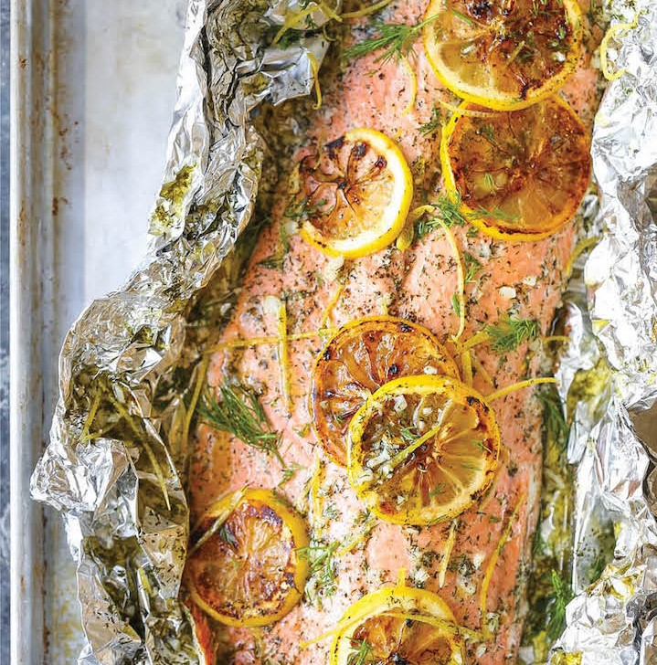

Salmon with Lemon and Dill
This recipe is a delightful take on a flavorful fillet of salmon. Bold flavors like lemon and dill help to give the fish a lovely taste, while foil helps to make for easy cleanup
Ingredients:
- One fillet of salmon
- One lemon, sliced
- One sprig of dill, pulled apart into small pieces
- One teaspoon of butter, cut into thin slices
- Aluminum foil
Steps:
- Preheat oven to 420 degrees
- On a baking dish, lay enough aluminum foil to accommodate the salmon fillet
- Lay the salmon fillet on top of the foil, skin down
- Lightly salt the salmon fillet
- Arrange sliced butter on top of the salmon
- Arrange sprigs of dill on top of the butter, covering the entire salmon
- Arrange slices of lemon on top of the butter, covering the entire salmon
- Cook the salmon for 20 to 25 minutes at 450 degrees, varying time for weight
- Salmon is done after slicing the fillet in half and verifying the center is no longer uncooked pink
- Before serving, remove the lemon and dill